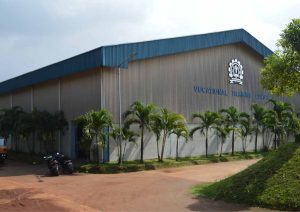
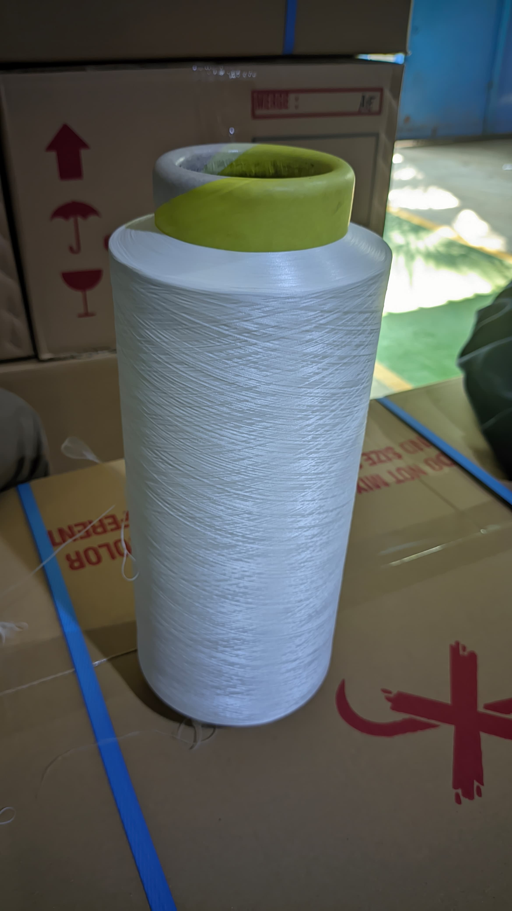

Selamat datang di Vocational Training Center Indorama, pusat pelatihan yang didedikasikan untuk mengembangkan keahlian dalam industri tekstil dan manufaktur. Sebagai bagian dari kelompok Indorama, kami berkomitmen untuk memberdayakan individu dengan keterampilan praktis dan pengetahuan teknis yang dibutuhkan untuk sukses dalam karir mereka.


About Us
DTY" adalah singkatan dari "Drawn Textured Yarn". DTY adalah jenis benang sintetis yang telah ditarik dan diberi tekstur selama proses pembuatannya. Proses ini memberikan benang DTY penampilan dan sifat tertentu, seperti kekuatan, keuletan, dan tekstur yang berbeda dari benang polos biasa. Benang DTY sering digunakan dalam pembuatan tekstil untuk pakaian, furnitur, dan berbagai produk tekstil lainnya
Kami menawarkan berbagai jenis DTY sesuai dengan kebutuhan dan spesifikasi pasar, termasuk variasi dalam denier (ukuran kehalusan benang), twist (kepadatan pusingan benang), dan jenis polimer (seperti polyester, nylon, atau bahan campuran). Produk DTY kami cocok untuk berbagai aplikasi termasuk pakaian, tekstil rumah tangga, furnitur, dan produk teknis lainnya.
Keunggulan Produk
Kualitas Unggul: DTY kami diproduksi dengan standar kualitas yang tinggi, menjamin ketahanan, daya tahan, dan kinerja dalam aplikasi tekstil.
Keelastisan: Benang DTY memiliki elastisitas yang baik, memberikan kenyamanan dan mobilitas yang optimal dalam pakaian dan produk tekstil lainnya
Pilihan Variasi: Kami menawarkan berbagai pilihan DTY, termasuk berbagai tingkat twist dan kemampuan untuk memenuhi spesifikasi khusus pelanggan.
Inovasi Terbaru: Dukungan teknologi terbaru memungkinkan kami untuk terus mengembangkan produk DTY dengan fitur-fitur baru yang meningkatkan performa dan keberlanjutan.
Proses dimulai dengan persiapan bahan baku polimer seperti polyester atau nylon. Bahan baku ini disiapkan dalam bentuk butiran atau bentuk lainnya yang sesuai dengan metode ekstrusi yang akan digunakan.
Tahap di mana filamen-filamen poliester yang telah dibuat dipersambungkan menjadi filamen panjang yang kontinu, jika dibutuhkan. Ini dilakukan untuk memastikan kelangsungan produksi tanpa harus memulai ulang proses pembentukan benang.
Proses pemilahan adalah tahap di mana serat atau benang disortir atau dipilah berdasarkan kualitas, warna, atau spesifikasi lainnya sebelum digunakan dalam proses produksi selanjutnya. Ini adalah langkah penting untuk memastikan bahwa hanya bahan baku yang sesuai yang digunakan dalam produk akhir.
Setelah serat DTY digulung , langkah selanjutnya adalah mempersiapkan produk untuk dikemas dengan baik sebelum didistribusikan ke konsumen atau pelanggan akhir.
DTY digunakan dalam pembuatan kain tenun untuk pakaian kasual, formal, dan semi-formal. Kain ini dapat memberikan kekuatan dan ketahanan yang diperlukan untuk pakaian sehari-hari serta penampilan yang halus dan menarik.
22
Industri rajut
DTY digunakan dalam pembuatan aksesori rajut seperti topi, syal, dan sarung tangan. Kemampuannya untuk mempertahankan bentuk dan tekstur membuatnya ideal untuk aksesori fashion.